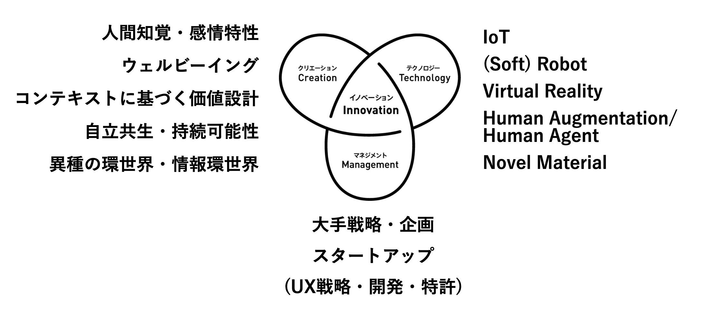
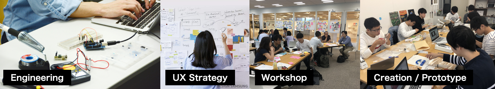

@@include('header.htm') @@include('blocks/navigation.htm')
<!-- 
================================================== 
    Company Description Section Start
================================================== -->
<section class="lab-description">
    <div class="container">
        <div class="row">
            <div class="col-md-12">
                
            </div>
            <div class="col-md-12">
                <div class="block">
                    <h3 class="subtitle wow fadeInUp" data-wow-delay=".3s" data-wow-duration="500ms">研究室について</h3>
                    <p class="wow fadeInUp" data-wow-delay=".5s" data-wow-duration="500ms">
                        ソンヨンア研究室は、2023年4月から法政大学デザイン工学部システムデザイン学科にて新設され、Affective Designというコンセプトを中心に、活動を展開して行きます。Interaction Design, UX Design, Service Design, Media Art, Speculative Artを含む幅広い産業・研究・芸術分野において活動を展開していきます。ソンヨンア研究室は、2023年4月から法政大学デザイン工学部システムデザイン学科にて新設され、Affective Designというコンセプトを中心に、活動を展開して行きます。Interaction
                        Design, UX Design, Service Design, Media Art, Speculative Artを含む幅広い産業・研究・芸術分野において活動を展開していきます。
                    </p>

                </div>
                <hr>
            </div>
            <div class="col-md-12">
                
            </div>
            <div class="col-md-12">
                <div class="block">
                    <h3 class="subtitle wow fadeInUp" data-wow-delay=".3s" data-wow-duration="500ms">Affective Design (アフェクティブデザイン)について</h3>
                    <p class="wow fadeInUp" data-wow-delay=".5s" data-wow-duration="500ms">
                        感情は、人と人、人とモノとのインタラクションを通じて変化していきます。ソン研究室では、インタラクションを通じた感情の変化を捉えること、そして、感情体験まで含めてインタラクションをデザイン可能にすることを目指しています。<br>人と直接触れ合うことができるソフトロボットや場の空気感まで記録するライフログ技術等の基盤研究から、モノに自律性を付与することでモノへの愛着をデザインする手法、気づきを促すワークショップデザインまで、多様な観点から感情体験の理解とデザインを探究し、新たな価値を生み出す研究を進めます。
                    </p>
                </div>
            </div>

        </div>
    </div>
    <hr>
</section>


@@include('blocks/footer.htm') @@include('footer.htm')